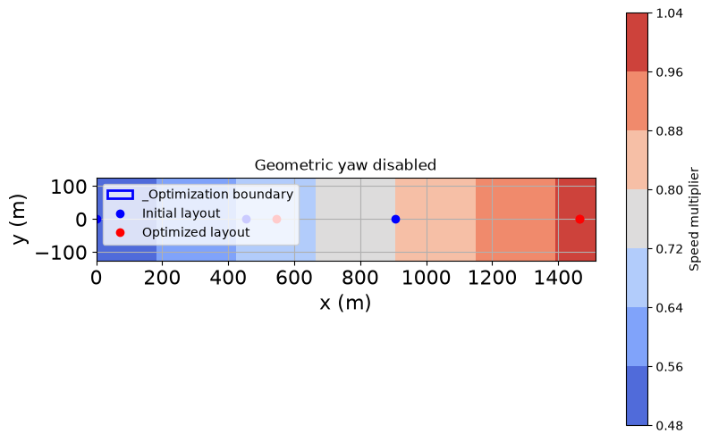
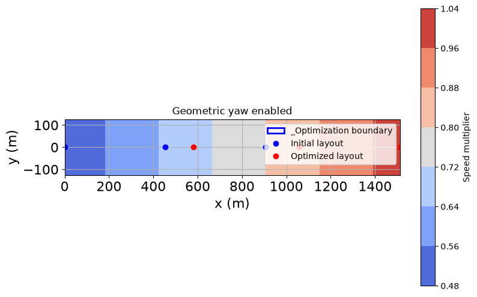

Example: Layout optimization with heterogeneous inflow#
"""Example: Layout optimization with heterogeneous inflow
This example shows a layout optimization using the geometric yaw option. It
combines elements of layout optimization and heterogeneous
inflow for demonstrative purposes.
Heterogeneity in the inflow provides the necessary driver for coupled yaw
and layout optimization to be worthwhile. First, a layout optimization is
run without coupled yaw optimization; then a coupled optimization is run to
show the benefits of coupled optimization when flows are heterogeneous.
"""
import os
import matplotlib.pyplot as plt
import numpy as np
from floris import FlorisModel, WindRose
from floris.optimization.layout_optimization.layout_optimization_scipy import (
LayoutOptimizationScipy,
)
# Initialize FLORIS
fmodel = FlorisModel("../inputs/gch.yaml")
# Setup 2 wind directions (due east and due west)
# and 1 wind speed with uniform probability
wind_directions = np.array([90.0, 270.0])
n_wds = len(wind_directions)
wind_speeds = np.array([8.0])
# Shape frequency distribution to match number of wind directions and wind speeds
freq_table = np.ones((len(wind_directions), len(wind_speeds)))
freq_table = freq_table / freq_table.sum()
# The boundaries for the turbines, specified as vertices
D = 126.0 # rotor diameter for the NREL 5MW
size_D = 12
boundaries = [(0.0, 0.0), (size_D * D, 0.0), (size_D * D, 0.1), (0.0, 0.1), (0.0, 0.0)]
# Set turbine locations to 4 turbines at corners of the rectangle
# (optimal without flow heterogeneity)
layout_x = [0.1, 0.3 * size_D * D, 0.6 * size_D * D]
layout_y = [0, 0, 0]
# Generate exaggerated heterogeneous inflow (same for all wind directions)
speed_multipliers = np.repeat(np.array([0.5, 1.0, 0.5, 1.0])[None, :], n_wds, axis=0)
x_locs = [0, size_D * D, 0, size_D * D]
y_locs = [-D, -D, D, D]
# Create the configuration dictionary to be used for the heterogeneous inflow.
heterogeneous_inflow_config_by_wd = {
"speed_multipliers": speed_multipliers,
"wind_directions": wind_directions,
"x": x_locs,
"y": y_locs,
}
# Establish a WindRose object
wind_rose = WindRose(
wind_directions=wind_directions,
wind_speeds=wind_speeds,
freq_table=freq_table,
ti_table=0.06,
heterogeneous_inflow_config_by_wd=heterogeneous_inflow_config_by_wd,
)
fmodel.set(
layout_x=layout_x,
layout_y=layout_y,
wind_data=wind_rose,
)
# Setup and solve the layout optimization problem without heterogeneity
maxiter = 100
layout_opt = LayoutOptimizationScipy(
fmodel, boundaries, min_dist=2 * D, optOptions={"maxiter": maxiter}
)
# Run the optimization
np.random.seed(0)
sol = layout_opt.optimize()
# Get the resulting improvement in AEP
print("... calcuating improvement in AEP")
fmodel.run()
base_aep = fmodel.get_farm_AEP() / 1e6
fmodel.set(layout_x=sol[0], layout_y=sol[1])
fmodel.run()
opt_aep = fmodel.get_farm_AEP() / 1e6
percent_gain = 100 * (opt_aep - base_aep) / base_aep
# Print and plot the results
print(f"Optimal layout: {sol}")
print(
f"Optimal layout improves AEP by {percent_gain:.1f}% "
f"from {base_aep:.1f} MWh to {opt_aep:.1f} MWh"
)
layout_opt.plot_layout_opt_results()
ax = plt.gca()
fig = plt.gcf()
sm = ax.tricontourf(x_locs, y_locs, speed_multipliers[0], cmap="coolwarm")
fig.colorbar(sm, ax=ax, label="Speed multiplier")
ax.legend(["_Optimization boundary", "Initial layout", "Optimized layout" ])
ax.set_title("Geometric yaw disabled")
# Rerun the layout optimization with geometric yaw enabled
print("\nReoptimizing with geometric yaw enabled.")
fmodel.set(layout_x=layout_x, layout_y=layout_y)
layout_opt = LayoutOptimizationScipy(
fmodel, boundaries, min_dist=2 * D, enable_geometric_yaw=True, optOptions={"maxiter": maxiter}
)
# Run the optimization
np.random.seed(0)
sol = layout_opt.optimize()
# Get the resulting improvement in AEP
print("... calcuating improvement in AEP")
fmodel.set(yaw_angles=np.zeros_like(layout_opt.yaw_angles))
fmodel.run()
base_aep = fmodel.get_farm_AEP() / 1e6
fmodel.set(layout_x=sol[0], layout_y=sol[1], yaw_angles=layout_opt.yaw_angles)
fmodel.run()
opt_aep = fmodel.get_farm_AEP() / 1e6
percent_gain = 100 * (opt_aep - base_aep) / base_aep
# Print and plot the results
print(f"Optimal layout: {sol}")
print(
f"Optimal layout improves AEP by {percent_gain:.1f}% "
f"from {base_aep:.1f} MWh to {opt_aep:.1f} MWh"
)
layout_opt.plot_layout_opt_results()
ax = plt.gca()
fig = plt.gcf()
sm = ax.tricontourf(x_locs, y_locs, speed_multipliers[0], cmap="coolwarm")
fig.colorbar(sm, ax=ax, label="Speed multiplier")
ax.legend(["_Optimization boundary", "Initial layout", "Optimized layout"])
ax.set_title("Geometric yaw enabled")
print(
"Turbine geometric yaw angles for wind direction {0:.2f}".format(wind_directions[1])
+ " and wind speed {0:.2f} m/s:".format(wind_speeds[0]),
f"{layout_opt.yaw_angles[1, :]}",
)
plt.show()
import warnings
warnings.filterwarnings('ignore')
=====================================================
Optimizing turbine layout...
Number of parameters to optimize = 6
=====================================================
NIT FC OBJFUN GNORM
1 8 -2.212410E+00 2.629932E+00
2 15 -2.242661E+00 3.547760E+00
3 22 -2.143406E+00 3.843797E+00
floris.floris_model.FlorisModel WARNING Some velocities at the rotor are negative.
floris.floris_model.FlorisModel WARNING Some velocities at the rotor are negative.
4 30 -3.649061E+00 4.092244E+00
6 37 -3.546157E+00 1.878245E+02
7 45 -3.864426E+00 2.087089E+02
8 62 -3.960963E+00 2.087115E+02
9 79 -3.981073E+00 2.087342E+02
10 96 -3.975682E+00 2.087614E+02
11 113 -3.977004E+00 2.087873E+02
12 130 -3.976702E+00 2.088134E+02
13 147 -3.976823E+00 2.088394E+02
14 164 -3.976834E+00 2.088654E+02
15 181 -3.976872E+00 2.088914E+02
16 198 -3.976903E+00 2.089174E+02
17 215 -3.976942E+00 2.089434E+02
18 232 -3.976970E+00 2.089693E+02
19 249 -3.977009E+00 2.089952E+02
20 266 -3.977038E+00 2.090211E+02
21 283 -3.977075E+00 2.090470E+02
22 300 -3.977108E+00 2.090728E+02
23 317 -3.977139E+00 2.090987E+02
24 334 -3.977172E+00 2.091245E+02
25 351 -3.977205E+00 2.091503E+02
26 368 -3.977240E+00 2.091760E+02
27 385 -3.977271E+00 2.092018E+02
28 402 -3.977304E+00 2.092275E+02
29 419 -3.977338E+00 2.092532E+02
30 436 -3.977370E+00 2.092789E+02
31 453 -3.977403E+00 2.093046E+02
32 470 -3.977436E+00 2.093302E+02
33 487 -3.977468E+00 2.093559E+02
34 504 -3.977502E+00 2.093815E+02
35 521 -3.977533E+00 2.094071E+02
36 538 -3.977567E+00 2.094326E+02
37 555 -3.977598E+00 2.094582E+02
38 572 -3.977628E+00 2.094837E+02
39 589 -3.977665E+00 2.095092E+02
40 606 -3.977697E+00 2.095347E+02
41 623 -3.977730E+00 2.095602E+02
42 640 -3.977760E+00 2.095856E+02
43 657 -3.977791E+00 2.096111E+02
44 674 -3.977823E+00 2.096365E+02
45 691 -3.977856E+00 2.096619E+02
46 708 -3.977888E+00 2.096872E+02
47 725 -3.977918E+00 2.097126E+02
48 742 -3.977954E+00 2.097379E+02
49 759 -3.977982E+00 2.097632E+02
50 776 -3.978014E+00 2.097885E+02
51 793 -3.978045E+00 2.098138E+02
52 810 -3.978079E+00 2.098390E+02
53 827 -3.978112E+00 2.098643E+02
54 844 -3.978139E+00 2.098895E+02
55 861 -3.978174E+00 2.099147E+02
56 878 -3.978200E+00 2.099398E+02
57 895 -3.978238E+00 2.099650E+02
58 912 -3.978267E+00 2.099901E+02
59 929 -3.978299E+00 2.100152E+02
60 946 -3.978329E+00 2.100403E+02
61 963 -3.978360E+00 2.100654E+02
62 980 -3.978387E+00 2.100904E+02
63 997 -3.978425E+00 2.101155E+02
64 1014 -3.978453E+00 2.101405E+02
65 1031 -3.978481E+00 2.101655E+02
66 1048 -3.978515E+00 2.101905E+02
67 1065 -3.978544E+00 2.102154E+02
68 1082 -3.978577E+00 2.102403E+02
69 1099 -3.978606E+00 2.102652E+02
70 1116 -3.978637E+00 2.102901E+02
71 1133 -3.978668E+00 2.103150E+02
72 1150 -3.978700E+00 2.103399E+02
73 1167 -3.978729E+00 2.103647E+02
74 1184 -3.978760E+00 2.103895E+02
75 1201 -3.978789E+00 2.104143E+02
76 1218 -3.978822E+00 2.104391E+02
77 1235 -3.978849E+00 2.104638E+02
78 1252 -3.978882E+00 2.104886E+02
79 1269 -3.978907E+00 2.105133E+02
80 1286 -3.978944E+00 2.105380E+02
81 1303 -3.978968E+00 2.105627E+02
82 1320 -3.979001E+00 2.105873E+02
83 1337 -3.979028E+00 2.106120E+02
84 1354 -3.979063E+00 2.106366E+02
85 1371 -3.979086E+00 2.106612E+02
86 1388 -3.979121E+00 2.106858E+02
87 1405 -3.979150E+00 2.107103E+02
88 1422 -3.979181E+00 2.107349E+02
89 1439 -3.979205E+00 2.107594E+02
90 1456 -3.979242E+00 2.107839E+02
91 1473 -3.979266E+00 2.108084E+02
92 1490 -3.979298E+00 2.108328E+02
93 1507 -3.979327E+00 2.108573E+02
94 1524 -3.979354E+00 2.108817E+02
95 1541 -3.979387E+00 2.109061E+02
96 1558 -3.979416E+00 2.109305E+02
97 1575 -3.979443E+00 2.109548E+02
98 1592 -3.979475E+00 2.109792E+02
99 1609 -3.979500E+00 2.110035E+02
100 1626 -3.979532E+00 2.110278E+02
Iteration limit reached (Exit mode 9)
Current function value: -3.7202164132999838
Iterations: 100
Function evaluations: 1642
Gradient evaluations: 100
Optimization complete.
... calcuating improvement in AEP
Optimal layout: [[np.float64(546.1140190934207), np.float64(1463.9724971652756), np.float64(1463.9725604652244)], [np.float64(1.7376269803716023e-09), np.float64(0.009120961193950365), np.float64(0.009120483420200573)]]
Optimal layout improves AEP by 272.0% from 6198.3 MWh to 23059.1 MWh
Reoptimizing with geometric yaw enabled.
=====================================================
Optimizing turbine layout...
Number of parameters to optimize = 6
=====================================================
NIT FC OBJFUN GNORM
1 8 -2.365430E+00 2.961907E+00
2 15 -2.508748E+00 3.815898E+00
3 22 -4.038124E+00 3.896698E+00
4 29 -2.299387E+00 2.057058E+02
5 38 -2.496287E+00 2.054054E+02
6 45 -2.456868E+00 4.385973E+00
7 52 -2.577231E+00 4.663732E+00
8 59 -2.597866E+00 4.721763E+00
9 66 -2.483246E+00 6.709435E+00
10 83 -2.597907E+00 4.533770E+00
11 90 -2.580890E+00 6.707398E+00
12 99 -2.597912E+00 6.241654E+00
13 106 -2.598150E+00 4.533507E+00
14 113 -2.598162E+00 4.529205E+00
15 120 -2.598224E+00 4.529186E+00
16 127 -2.581172E+00 4.529096E+00
17 135 -2.599128E+00 4.953849E+00
18 142 -2.581679E+00 4.734706E+00
20 156 -2.366416E+00 6.380051E+00
21 165 -2.640704E+00 4.584097E+00
22 173 -2.661724E+00 4.766764E+00
23 181 -2.664625E+00 4.753104E+00
24 198 -2.410572E+00 7.428022E+00
25 215 -2.353347E+00 5.283728E+00
26 232 -2.558731E+00 4.747531E+00
Optimization terminated successfully (Exit mode 0)
Current function value: -2.6649226429817383
Iterations: 26
Function evaluations: 242
Gradient evaluations: 25
Optimization complete.
... calcuating improvement in AEP
Optimal layout: [[np.float64(581.1119420845133), np.float64(1058.6903602810162), np.float64(1511.9995790195937)], [np.float64(2.7408661461862973e-17), np.float64(1.4959188216246156e-07), np.float64(0.09999996827256004)]]
Optimal layout improves AEP by 166.5% from 6198.3 MWh to 16518.0 MWh
Turbine geometric yaw angles for wind direction 270.00 and wind speed 8.00 m/s: [25.44729821 25.67865378 0. ]

